PERALATAN UNTUK MENJEPIT BENDA-BENDA KERJA
Activity
Ada beberapa catatan pada saat menjepit benda-kerja ;
- Penjepitan jangan sampai merusak benda-kerja
- Panjang penjepitan terhadap benda-kerja, apakah harus ditahan senter atau tidak. Pada normal, bidang yang dijepit 1 x dia.
Fungsi alat penjepit :
- Mencekam benda-kerja pada kedudukan yang benar terhadap spindel mesin
- Menahan benda-kerja dari gaya pemotongan pahat, dan memutar benda kerja agar terjadi proses penyayatan.
Dibedakan atas :
- Menjepit antara 2 senter (between centers).
- Menjepit pada cekam (chuck).
- Menjepit pada kolet (collets).
Menjepit antara senter-senter
Pemakaian :
Pada benda-kerja yang panjang dan berbentuk poros bisa juga pipa. Benda-kerja dijepit antara ujung senter dari spindel kerja (senter mati) dan kepala lepas (senter putar/hidup). Benda-kerja ikut terputar oleh jantung bubut (lathe dog) atau pembawa bagian muka (driving plate). Pemakanan pahat tidak boleh terlalu tebal, karena akan lepas dari penahan senter.
Lubang senter :
Lubang ini dibuat pada kedua ujung-ujung permukaannya. Besar dan bentuknya tergantung dari :
- Besarnya benda-kerja.
- Pengerjaan lebih lanjut benda-kerja (mengasah).
Pembuatan lubang senter umumnya dilakukan dengan mata bor senter. Putaran pada mesin bubut sekitar 1000 rpm, apabila pada keadaan posisi normal.
Macam-macam lubang senter menurut DIN 332 :
Bentuk R dengan bidang kontak yang melengkung, tanpa perseng pengaman. Hal ini cocok untuk bubut antara dua senter yang tirus. Karena akan lebih fleksibel pada putaranya. Hal ini sangat cocok pembubutan tirus dengan menggeser kepala lepas.
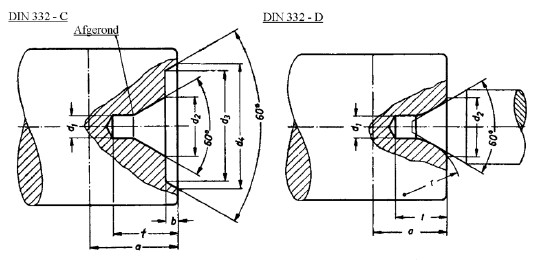
http://www.tandwiel.info/gfx/handboek/Image495.gif
Gambar 22 ukuran bor center
Lubang senter R 4 x 8,5 DIN 332
Bentuk A dengan bidang kotak lurus, tanpa perseng pengaman. Hal ini cocok untuk benda yang ditahan lurus oleh kepala lepas.
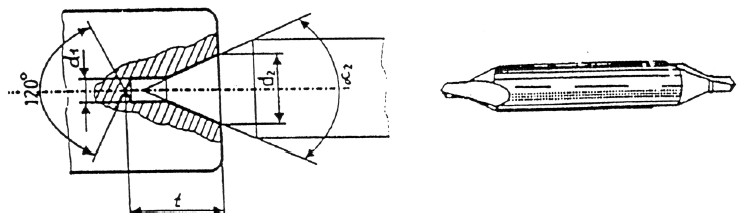
Gambar 23 Lubang Senter A 4 x 8,5 DIN 332
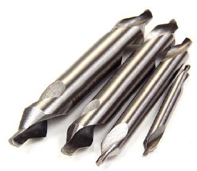
Gambar 24 Bor Center
Lubang senter dengan perseng pengaman :
Di gunakan apabila lubang senter digunakan pada beberapa mesin dan jangan sampai rusak.
Senter Kepala Lepas :
- Senter pejal / mati/diam: senter ini nempel di spindle mesin. Untuk memasang ini maka kepala chuck harus dilepas.
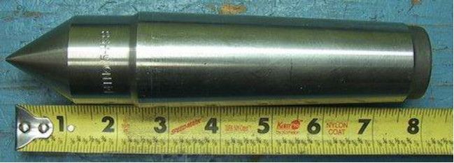
http://cavlon.com/zcstore/images/3646_02.jpg
Gambar 25 Center Mati - Senter yang ikut berputar/hidup. Dipasang pada kepala lepas.
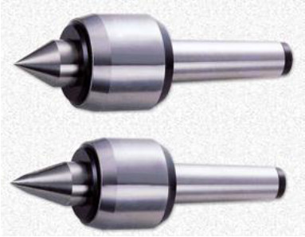
http://www.taiwantool.com.tw/upload/pd/NCK-MT2A-L.jpg
Gambar26 Center Putar - Senter piring untuk memegang ujung pipa.
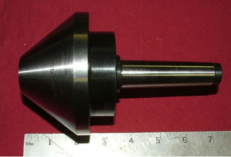
http://www.tools4cheap.net/prodimages/m3bull.jpg
Gambar 27 Center Untuk Pipa
Penggunaan center ditunjukan pada gambar berikut ini
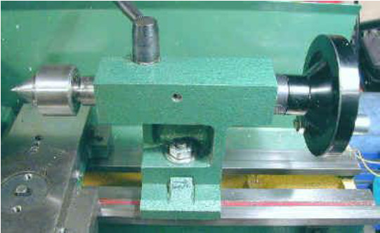
http://www.mini-lathe.com/Mini_lathe/Features/Tailstock_y.jpg
Gambar 28 Pemasangan Center Putar
Benda-kerja ikut berputar karena terbawa oleh jantung bubut (lathe dog) :
Pada poros mesin bubut terdapat cakram pembawa (driving plate) dengan baut pembawa. Dengan ini kepala chuck harus terlepas.
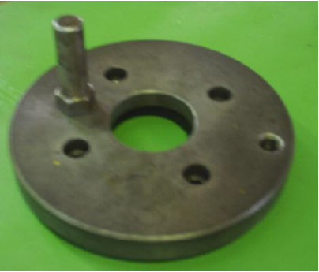
Gambar 29 Plat Pembawa
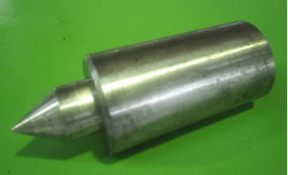
Gambar 30 Center Mati diikat pada Housing
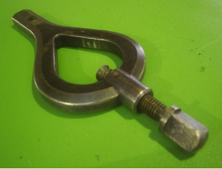
Gambar 31 Lathe Dog
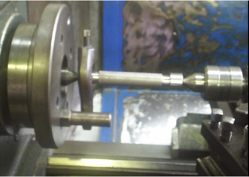
Gambar 32 Pembubutan diantara Dua Center
Benda-kerja ikut berputar karena terbawa oleh pembawa bagian muka (driving face).
Ini contoh untuk pipa. Berputarnya benda-kerja terbawa oleh sejumlah baut-baut logam yang telah diperkakas, dan letaknya diatur sehingga berbentuk lingkaran.
Menjepit dengan cekam, chuck
Dilakukan pada benda-kerja yang pendek ; benda-kerja dikerjamesinkan dalam keadaan seolah-olah melayang.
Dibedakan atas :
- Cekam 3 rahang - untuk benda-kerja bulat dan benda-kerja berbentuk segi-3, segi-6, segi-12. Chuck dari cekam ini ada yang masuk dan system jepit keluar. Untuk hal-hal khusus bisa juga dipakai soft chuck, yaitu chuck lunak yang dibubut sesuai dengan diameter benda kerja.
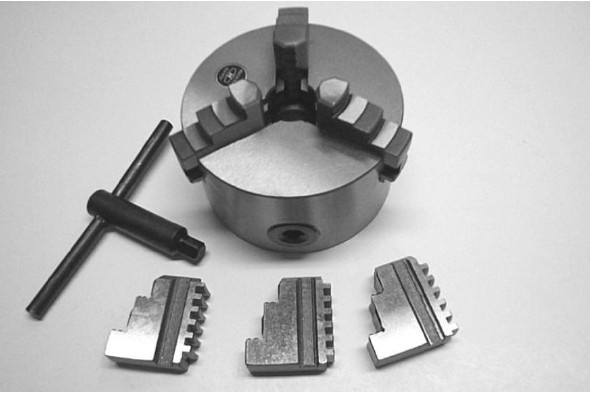
http://www.lathemaster.com/images/4_inch_chuck.JPG
Gambar 33 Cekam Rahang Tiga - Cekam 4 rahang-untuk menjepit benda-kerja dengan bentuk yang cermat, bulat, segi-4, atau segi-8.
- Cekam bebas-untuk menjepit benda-kerja yang lebih besar, benda-kerja dengan bentuk yang tidak teratur.
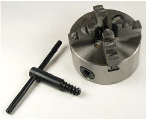
http://littlemachineshop.com/Products/Images/480/480.2361.jpg
Gambar 34 Cekam Rahang Empat
Menjepit pada kolet (collets)
Penggunaan :
Untuk benda-kerja yang presisi, tidak merusak kehalusan permukaan luar benda. Hal ini sangat bermanfaat untuk material yang lunak seperti teflon dan aluminium. Benda berdiameter kecil sangat baik dijepit dengan kolet. Untuk masing-masing diameter diperlukan ukuran kolet yang berbeda.
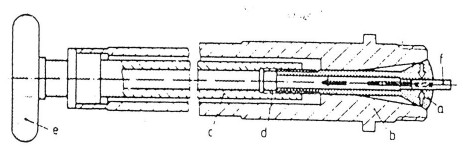
Gambar 35 ilusrasi penjepitan dengan collet pada mesin bubut
Keterangan:
a. Kollet d. Bagian ulir penerik
b. Pipa spindle mesin e. Roda penarik
c. Pipa penarik kollet f. Benda-kerja
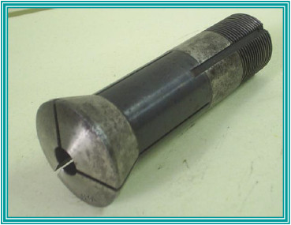
Gambar 36 Collet Mesin Bubut
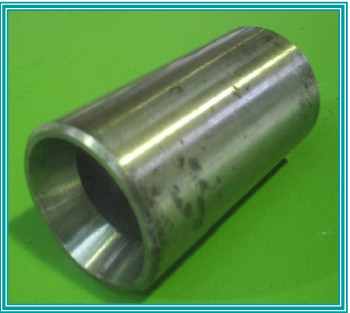
Gambar 37 Housing Collet
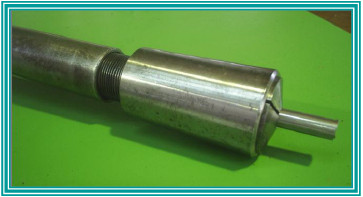
Gambar 38 Pengikatan benda kerja dengan collet